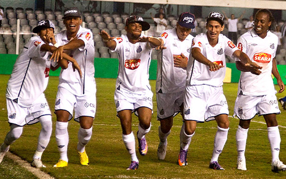
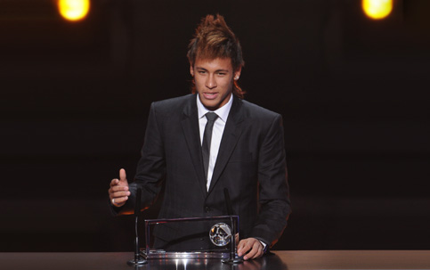
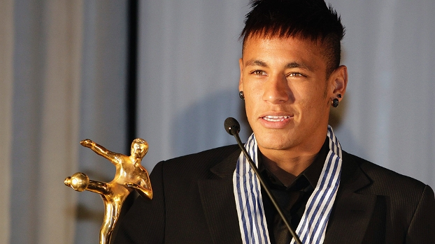
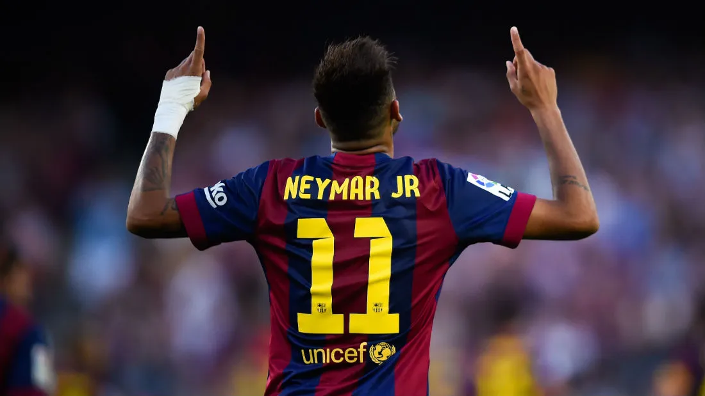
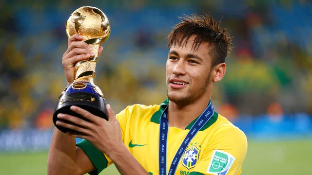
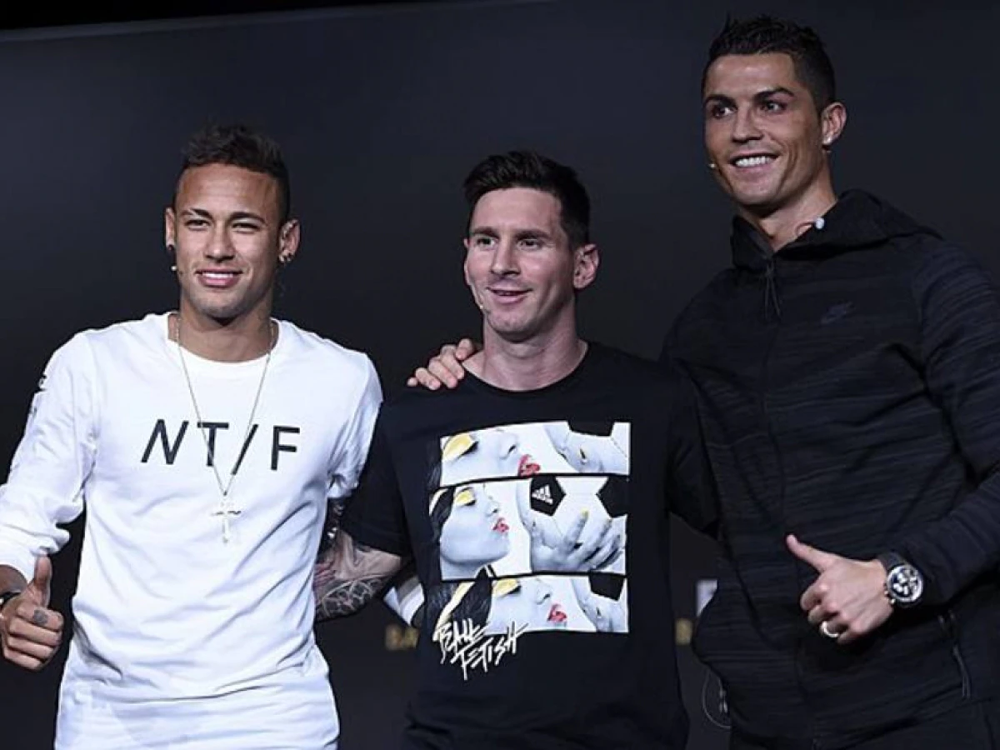
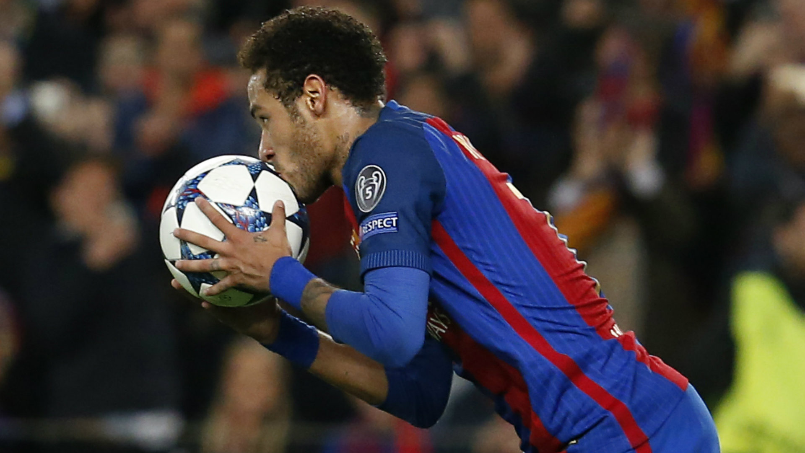
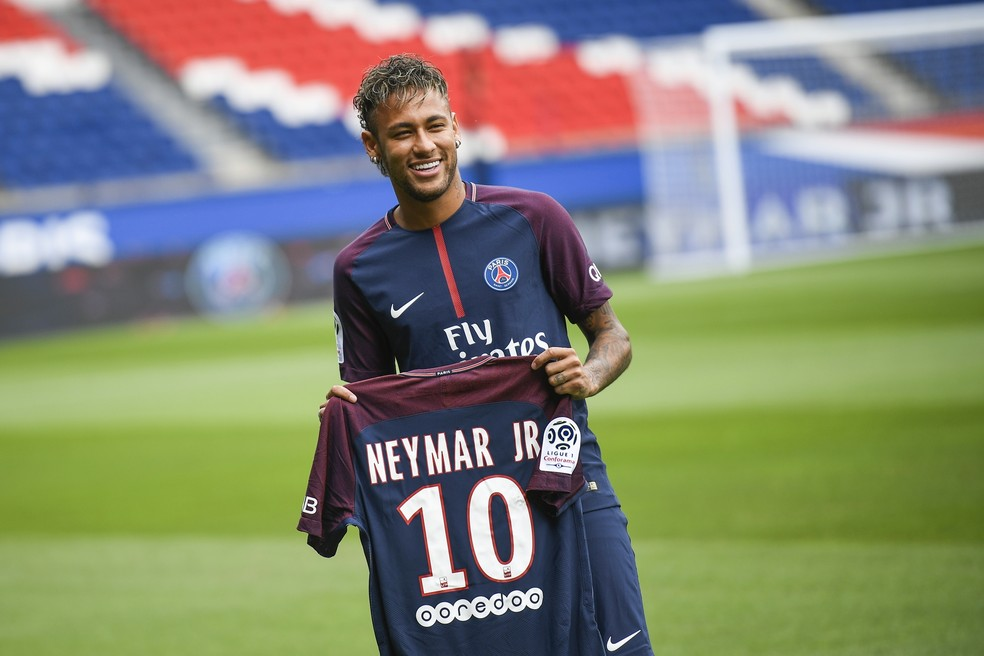

NEYMAR DA SILVA SANTOS JÚNIOR
Quem é:
Neymar da Silva Santos Júnior ou simplesmente Neymar Jr é um jogador do futebol brasileiro entre os mais destacados do mundo, o mesmo já teve passagens pelo Santos no Brasil, Barcelona na Espanha e Paris Saint German na França, o jogador já foi premiado com o prêmio Puskas (gol mais bonito do ano) em 2011 e finalista da Bola de ouro em 2015.
HISTÓRIA DO JOGADOR
Nascido em Mogi das Cruzes, São Paulo, no dia 5 de fevereiro de 1992, Neymar foi revelado pelo Santos e por lá conquistou 3 Campeonatos Paulistas, 1 Copa do Brasil, 1 Copa Libertadores da América, 1 Recopa Sul-Americana, 2x Rei da América (melhor jogador do continente), 1 Prêmio Puskas (gol mais bonito do ano) e entre outras dezenas de títulos individuais.
Ver Historia Completa

Em 2010 Neymar foi o principal jogador da geração "Meninos da Vila", protagonizada por Neymar, Robinho, Paulo Henriqe Ganso e André. O quarteto de ataque foi campeão da Copa do Brasil com a maior média de gols da história. Destaque para os 8 gols no Guaraní e 10 gols no Naviraiense.
Ver Historia Completa

Em 2011 Neymar protagonizou a maior partida do século contra o Flamengo de Ronaldinho Gaúcho na Vila Belmiro, jogo contou com gol de falta de Ronaldinho por baixo da barreira e o gol do Neymar que teve direito ao prêmio Puskas.
Ver Historia Completa

Ainda em 2011, Neymar foi eleito o melhor jogador da América após vencer a Libertadores pelo Santos, o mesmo seria eleito novamente em 2012. Sendo uns dos pouquissímos jogadores da história a ganhar o prêmio 2x seguidas.
Ver Historia Completa

Após o sucesso no futebol brasileiro, Neymar dispertou interesse dos clubes europeus e os mesmos começaram um "leilão" para comprar o Neymar. O vencedor dessa disputa foi o Barcelona, que pagou a humilde quantia de 80 milhões de euros ao Santos para comprar o jogador.
Ver Historia Completa

Após a contratação do Barcelona, Neymar veio ao Brasil para disputar a Copa das Confederações pela seleção brasileira, Neymar foi o protagonista da campanha eleito o melhor jogador da Copa. O Brasil terminou como o campeão superando a Espanha na final, que na época era a atual campeã do mundo.
Ver Historia Completa

No Barcelona, Neymar foi um dos protagonistas do trio MSN (Neymar, Messi e Suárez), trio que multicampeão pelo Barcelona, incluindo a taça da Champions League.
Ver Historia Completa

Após a campanha pelo Barcelona, Neymar foi finalista pelo prêmio de melhor jogador do mundo. Apesar de ter ficdo em terceiro lugar, naquele ano o Neymar em números superou as temporadas em que Kaká, Ronaldinho Gaúcho, Luka Modric e algumas temporadas em que Messi e Cristiano Ronaldo foram eleitos melhores do mundo.
Ver Historia Completa

O jogador manteve as boas atuações e em 2016 protagonizou a maior virada da história do futebol, quando o Barcelona venceu o PSG por 6x1 após ser derrotado por 4x0 em Paris, Neymar assumiu a responsabilidade e buscou a virada contra o PSG.
Ver Historia Completa

Em 2017, o Paris Saint German foi atrás do Neymar com disposição pra pagar o que for necessário para ter o jogador no clube. Dito e feito, Neymar foi a maior contratação da história do Futebol, o PSG pagou 200 milhões de euros para ter o jogador, além do salário mais alto do futebol mundial.
Ver Historia Completa
CONTATOS DO JOGADOR